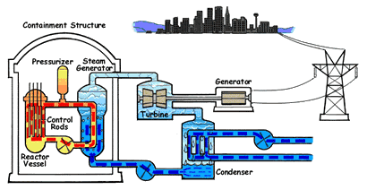

Motor bakar ditinjau dari proses pembakarannya
Jika ditinjau dari cara memperoleh energi termal ini (proses pembakaran bahan bakar), maka motor bakar dapat dibagi menjadi 2 golongan yaitu: motor pembakaran luar dan motor pembakaran dalam.

- Motor Pembakaran Dalam (Internal Combustion Engine)
Mesin pembakaran dalam adalah sebuah mesin yang sumber tenaganya berasal dari pengembangan gas-gas panas bertekanan tinggi hasil pembakaran campuran bahan bakar dan udara, yang berlangsung di dalam ruang tertutup dalam mesin, yang disebut ruang bakar (combustion chamber). Contoh mesin pembakaran dalam yaitu mesin 2 tak, mesin 4 tak, mesin 6 tak, mesin wankel (mesin rotary), mesin diesel, mesin jet ( termasuk turbojet, turbofan, ramjet, rocket, dll). Mesin pembakaran dalam sendiri berdasarkan jenis bahan bakar yang digunakan antara lain mesin bensin dan mesin diesel. - Motor Pembakaran Luar (External Combustion Engine)
Mesin pembakaran luar merupakan sebuah mesin yang proses terjadinya pembakaran dilakukan di luar mesin atau bukan di dalam ruang yang tertutup (ruang bakar). Panas yang dihasilkan dari proses pembakaran tidak akan langsung dirubah menjadi tenaga gerak, melainkan memerlukan media (komponen) penghantar panas dan baru kemudian akan dirubah menjadi energi gerak. Contoh mesin pembakaran luar yaitu mesin uap (pesawat tenaga uap, kereta api uap, kapal uap, dll), mesin stirling, turbin uap, dan ketel uap.
Keuntungan dari mesin pembakaran dalam dibandingkan dengan mesin pembakaran luar adalah kontruksinya lebih sederhana, tidak memerlukan fluida kerja yang banyak dan efesiensi totalnya lebih tinggi 